001 / 134
Product Type
ليه موجودة؟ عشان النظام يفرق بين الخدمة والبضاعة
بتعمل إيه؟ ومثال استخدامها
مسؤول المنتجات بيختار Service للخدمة. ستوديو بيختار تصنيف العمولة المناسب حسب النوع، فتغيير النوع ممكن يغير القاعدة المطابقة.
موديولين وحسابات واضحة ومثال كامل جوه أودو
كل حقل ليه شرح وكل نتيجة تقدر تراجع أصلها
تسجيل من نسخة تدريب محلية معزولة بنفس كود الموديولين على test
الأسماء والفواتير والأرقام الظاهرة كلها DEMO
| النظام | الحساب | النتيجة |
|---|---|---|
| Studio | وقت الترحيل تحقيق100% وشريحة4%: 36 −7.20 | 28.80 SAR |
| تسوية الموظف | وقت التسوية تحقيق80% وشريحة2%: 720 ×2% | 14.40 SAR |
| الفنيون | عمولة خدمة مكتملة60 ÷فنيين2 | 30 +30 SAR |
الحسابات منفصلة — متجمعش النتائج كمستحق واحد من غير مراجعة السياسة
الضريبة135 على الفاتورة و27 على المرتجع مستبعدة من العمولة
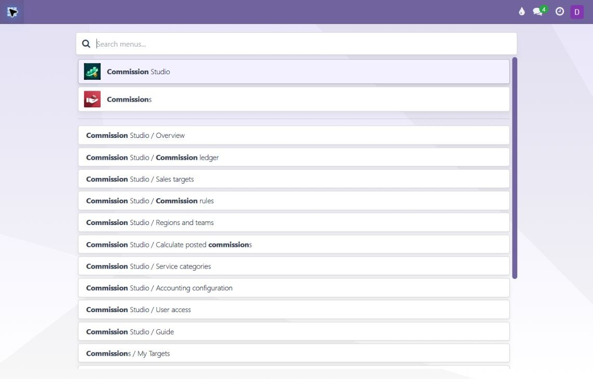
أهلا بيك. في الفيديو ده هنشرح موديولين العمولات على أودو سبعتاشر. الأول اسمه كوميشنز، وده فيه تسويات الموظفين وتسويات الفنيين. والتاني كوميشن ستوديو، وده فيه سجل عمولات المبيعات والتارجت والفرق والشرائح والمرتجعات والقيود المحاسبية. الاتنين بيشاركوا تصنيفات الخدمات، لكن حساباتهم منفصلة. ما تجمعش نتيجتهم وتعتبرها مستحق واحد من غير مراجعة سياسة شركتك. كل اللي هنكتبه هنا بيانات تدريب، والنسب أمثلة للشرح. هنجهز الخدمة والموظف، ونشوف فاتورة ومرتجع، وبعدها نراجع التسوية والأثر المحاسبي.
| اسم الحقل أو الخطوة | بتعمل إيه وإمتى تستخدمها |
|---|---|
| Commissions | تسويات موظفين حسب صافي الفترة + تسويات فنيين حسب تنفيذ الخدمة |
| Sales Commission Studio | لقطة عمولة لكل سطر فاتورة وترابطها بالبيع والفريق والمحاسبة |
| Commission Category | تصنيف خدمة مشترك؛ الحسابات والنتائج منفصلة |

نبدأ من تعريف الخدمة. عندنا خدمة تدريب اسمها ديمو تينتنج، وسعرها ألف ريال. نوع المنتج سيرفس. خانة كوميشن كاتيجوري بتحدد تصنيف الخدمة اللي قواعد عمولة الموظف وستوديو هتستخدمه. هنختار ديمو جولد. التصنيف هنا مختلف عن برودكت كاتيجوري، اللي ستوديو بيستخدمه للبضاعة. خانة تكنيشنز كوميشن أماونت هنكتب فيها ستين ريال. دي عمولة الخدمة كلها للفنيين، مش ستين لكل فني، ومش نسبة من سعر الفاتورة. لما الخدمة تخلص على أمر عمل مكتمل، الستين بيتوزعوا بالتساوي على الفنيين الموجودين في ستاف بتاع الخدمة. هنرجع لمثال فنيين، نصيب كل واحد تلاتين.
| اسم الحقل أو الخطوة | بتعمل إيه وإمتى تستخدمها |
|---|---|
| Product Type | اختار Service للخدمة؛ Studio يختار نوع التصنيف حسب نوع المنتج |
| Commission Category | على متغير المنتج؛ هو المفتاح لتصنيف الخدمة في الموديولين |
| Technicians Commission Amount | مبلغ الخدمة كلها، بيتقسم بالتساوي على Staff |
| Product Category | ده تصنيف البضاعة في Studio؛ مختلف عن تصنيف عمولة الخدمة |

ندخل تطبيق كوميشنز، وبعده كونفيجريشن، ثم كوميشنز. نفتح قاعدة التدريب ونكتب اسم واضح. في ريتس ديفينيشن كل سطر فيه كاتيجوري، وفروم، وتو، وبيرسنت. فروم وتو هنا حدود نسبة تحقيق التارجت، مش مبلغ الفاتورة. في مثالنا تصنيف جولد من صفر لحد تسعة وتسعين فاصلة تسعة وتسعين عمولته اتنين في المية، ومن مية لحد حد كبير محدد عمولته أربعة في المية. في الموديول ده تو لازم يكون حد فعلي، الصفر مش معناه مفتوح. خلّي حدود نفس التصنيف ما تتداخلش، لأن السطور المطابقة ممكن تتحسب مع بعض. القاعدة دي تخص تسوية الموظفين، ومش هي نفسها قاعدة ستوديو.
| اسم الحقل أو الخطوة | بتعمل إيه وإمتى تستخدمها |
|---|---|
| Name | اسم سياسة تسوية الموظفين |
| Category | تصنيف عمولة الخدمة |
| From / To | حدود نسبة تحقيق التارجت شاملة الطرفين؛ تجنب التداخل |
| Percent | نسبة العمولة على صافي السطور المطابقة |
| To = 0 | في Commissions حد رقمي فعلي؛ مش مفتوح |
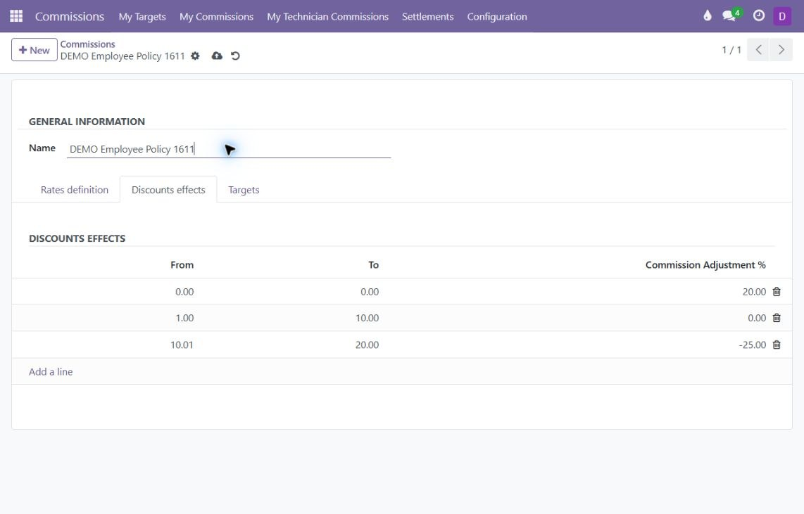
نفتح ديسكاونتس إفكتس. هنا فروم وتو هما نسبة خصم العميل على سطر الفاتورة. أما كوميشن أدجستمنت فهي نسبة تعديل العمولة نفسها. الموجب بيزوّد، والسالب بيقلل. هنكتب خصم صفر وصفر، وتعديل موجب عشرين. وخصم من واحد لعشرة، وتعديل صفر. ومن عشرة فاصلة صفر واحد لعشرين، وتعديل سالب خمسة وعشرين. لو العمولة الأساسية أربعين ريال، من غير خصم تبقى تمانية وأربعين. ولو خصم العميل خمستاشر في المية، تبقى تلاتين ريال. التعديل بيتعمل بعد حساب العمولة على صافي السطر بعد خصم العميل، ومن غير الضريبة. القيم دي قابلة للتجهيز في كوميشنز، فلازم تختاروا سياسة الشركة وتراجعوا الحدود.
| اسم الحقل أو الخطوة | بتعمل إيه وإمتى تستخدمها |
|---|---|
| From / To | حدود خصم العميل على سطر الفاتورة |
| Commission Adjustment % | تعديل نسبي للعمولة نفسها؛ +20 زيادة، −25 تقليل |
| Discount deduction | حقل تقني بالتسوية؛ التعديل الموجب قد يظهر بقيمة خصم سالبة لأن الإجمالي = الأساسي − هذا الحقل |
| Total Amount | عمولة السطر بعد تعديل أثر الخصم |
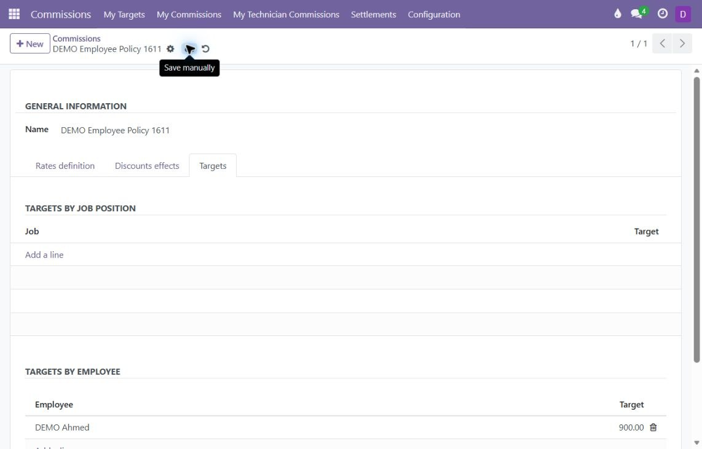
نفتح تارجتس. نقدر نحدد تارجت حسب الوظيفة، أو نحط تارجت لموظف بعينه. لو الموظف له الاتنين، القيمة الخاصة بالموظف هي اللي بتستخدم. في التدريب هنختار ديمو أحمد ونكتب تسعمية ريال. لازم الموظف يكون مربوط بمستخدم أودو، لأن التسوية بتجمع سطور الفواتير من إنفويس سيلز بيرسن اللي مربوط بالموظف. دي نقطة مهمة جدا. موديول كوميشنز بيقرأ مندوب الفاتورة، أما ستوديو فبيقرأ المندوب وفريقه من أمر البيع الأصلي. عشان المقارنة في مثالنا تبقى مفهومة، هنخلي نفس المستخدم على أمر البيع والفاتورة. نسبة التحقيق هتساوي صافي الفواتير المؤهلة على تارجت الموظف في مية.
| اسم الحقل أو الخطوة | بتعمل إيه وإمتى تستخدمها |
|---|---|
| Targets by job position | تارجت كل الموظفين الموجودين على الوظيفة |
| Targets by employee | تارجت خاص بالموظف وله أولوية على الوظيفة |
| Employee / User | اربط الموظف بمستخدم صحيح قبل التسوية |
| Invoice Salesperson | مصدر نسبة المبيعات للموظف في Commissions |
| Achievement | صافي السطور المؤهلة ÷ التارجت ×100؛ لو التارجت صفر فالتحقيق صفر |

ندخل كوميشن ستوديو، وبعده ريجنز آند تيمز. الهيكل منطقة، ومنطقة فرعية، وفرع. نحدد الشركة ومستوى الفريق وبارنت ريجن، ونربط الأعضاء وقائد الفريق. قيادة الفريق بتحدد نطاق مدير المنطقة وفروعه، لكنها لوحدها مش بتمنح دور العمولات. من المستخدمين، تبويب كوميشن أكسس، فيه سيلز بيرسن للمندوب، وريجن مانجر لمدير المنطقة، وكوميشن أدمنستريتور للإدارة. فيه فرق بين أوتوماتيك تيمز الناتجة من القيادة، وأديشنال مانجد ريجنز للإسناد الإضافي. المندوب يشوف عمولاته، والمدير يشوف نطاقه، والإدارة تشوف الشركات المسموحة ليها. صلاحيات الحسابات منفصلة، وهنشرح أثرها وقت القيد.
| اسم الحقل أو الخطوة | بتعمل إيه وإمتى تستخدمها |
|---|---|
| Company | الشركة المالكة للفريق؛ الهيكل لازم يبقى متسق |
| Commission Level | Region / Subregion / Branch |
| Parent Region | أب بمستوى أعلى ولنفس الشركة؛ بدون دورة في الهيكل |
| Team Leader | يوفر نطاق القيادة مع وجود دور Region manager |
| Commission Manager | إسناد إضافي اختياري؛ مش بديل عن الدور الأمني |
| Members | أعضاء الفريق؛ العضوية وحدها مش صلاحية مدير منطقة |
| Commission Access | No access / Salesperson / Region manager / Commission administrator |
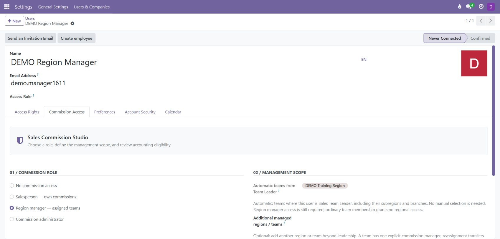

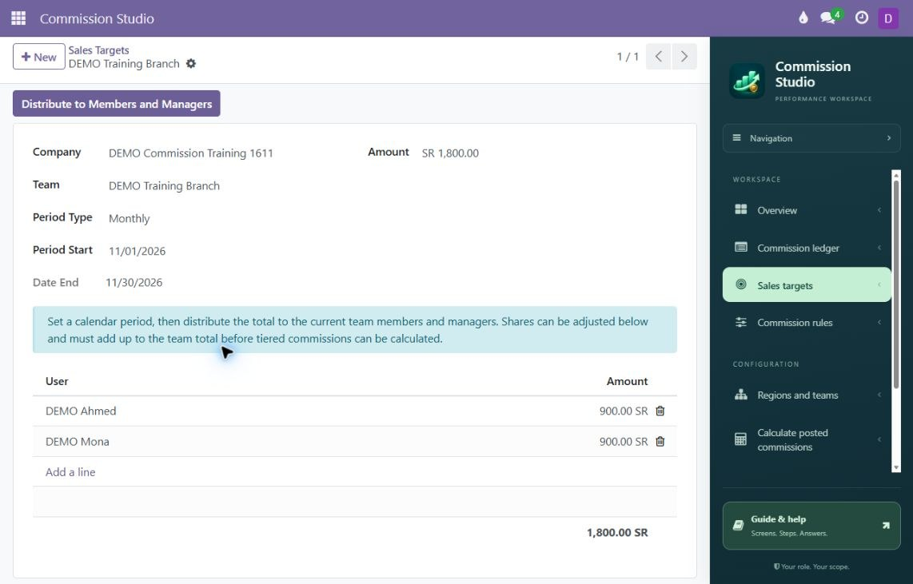
نفتح سيلز تارجتس. نحدد الشركة والفريق ونوع الفترة. ممكن شهري أو ربع سنوي أو نصف سنوي أو سنوي. بداية الفترة لازم تبقى أول شهر في الفترة وأول يوم منه. هنا هنستخدم نوفمبر ألفين ستة وعشرين، وإجمالي تارجت الفريق ألف وتمانمية ريال. زر ديستريبيوت تو ممبرز آند مانجرز بيوزع على الأعضاء والمديرين الحاليين، وبيستبدل التوزيع القديم، فراجعه قبل الضغط. نقدر نعدل الأنصبة يدوي. في مثالنا أحمد تسعمية، ومنى تسعمية. لازم مجموع الأنصبة يساوي ألف وتمانمية قبل حساب قواعد الشرائح، ولازم نصيب المندوب يبقى موجب. رقم التارجت الظاهر في القاعدة إجمالي الاختيارات الحالية، مش نصيب كل مندوب لوحده.
| اسم الحقل أو الخطوة | بتعمل إيه وإمتى تستخدمها |
|---|---|
| Period Type | Monthly / Quarterly / Half-yearly / Yearly |
| Period Start / Date End | أول يوم بالفترة؛ النهاية تتحسب تلقائي |
| Amount | إجمالي تارجت الفريق بعملة الشركة |
| Distribute to Members and Managers | يستبدل الأنصبة السابقة بالتوزيع المتساوي الحالي |
| User / Amount | نصيب كل عضو أو مدير؛ المجموع لازم يساوي الإجمالي |
| Current Selected Target Total | إجمالي الأنصبة الحالية المرئية للاختيارات؛ الحساب يستخدم نصيب مندوب السطر |

نفتح كوميشن رولز. نكتب اسم القاعدة والشركة وتواريخ السريان. سكوب سيلز بيبول بيسمح بأكتر من مندوب في نفس القاعدة، وسيلز تيم بيطبق على الفريق المحدد بالضبط، من غير فروعه تلقائي. القاعدة الشخصية ليها أولوية عن قاعدة الفريق لنفس التصنيف والتاريخ، والتداخل داخل نفس النطاق مرفوض. من غير أتشيفمنت تيرز، بيتستخدم التصنيف والنسبة الثابتة. مع الشرائح، كل سطر ليه نوع تصنيف، بضاعة أو خدمة، والتصنيف نفسه، وحدود التحقيق ونسبة العمولة. هنحط جولد أقل من مية باتنين في المية، ومن مية فأكتر بأربعة. هنا تحديدا الحد الأعلى صفر معناه مفتوح. التحقيق بيتحسب لمندوب الفاتورة الأصلي ونصيبه الشخصي في التارجت. التصنيف اللي مالوش شريحة مطابقة عمولته صفر.
| اسم الحقل أو الخطوة | بتعمل إيه وإمتى تستخدمها |
|---|---|
| Scope / Salespeople | قاعدة واحدة لعدة مستخدمين |
| Scope / Sales team | قاعدة لفريق محدد بالضبط؛ لا تشمل الأبناء تلقائي |
| Date From / Date To | سريان القاعدة حسب تاريخ الفاتورة |
| Category Type | Product category للبضاعة أو Service category للخدمات |
| Achievement From / To % | حدود التحقيق لنفس التصنيف؛ الحد الأعلى صفر = مفتوح هنا |
| Commission % | النسبة المطبقة على صافي السطر؛ الشخصية تتقدم على قاعدة الفريق |
| No matching tier | مع وجود الشرائح: التصنيف بلا شريحة مطابقة عمولته صفر؛ لا يرجع للنسبة الثابتة |

في قاعدة ستوديو فيه أبلاي كاستمر ديسكاونت أدجستمنت. لما نفعله، خصم صفر بيزوّد العمولة عشرين في المية. ومن واحد لعشرة بيسيبها زي ما هي. ومن عشرة فاصلة صفر واحد لعشرين بيقللها خمسة وعشرين في المية. غير الحدود دي بيحتاج مراجعة، حتى خصم نص في المية مثلا. بعد كده من أكونتينج كونفيجريشن نقدر نفعّل قيد استحقاق العمولة للشركة، ونختار يومية متنوعة، وحساب مصروف مدين، وحساب التزام دائن. لازم الحسابات مختلفة وصحيحة ولنفس الشركة. التفعيل اختياري، ومش معناه دفع فلوس ولا عمل مسير مرتبات. في نسخة التدريب جهزنا يومية وحسابات تدريب عشان نشوف القيد الناتج.
| اسم الحقل أو الخطوة | بتعمل إيه وإمتى تستخدمها |
|---|---|
| Apply Customer Discount Adjustment | سياسة Studio: 0% زيادة20%؛ 1–10% بدون تغيير؛ 10.01–20% تقليل25%؛ غيرها Needs review |
| Automatically accrue sales commissions | تفعيل محاسبي اختياري لكل شركة |
| Commission journal | يومية Miscellaneous صحيحة ولنفس الشركة والعملة |
| Commission expense (Debit) | حساب مصروف مدين |
| Commission payable (Credit) | حساب التزام دائن؛ مختلف عن المصروف |
| Payment | قيد الاستحقاق لا ينشئ دفعة ولا مسير مرتبات |
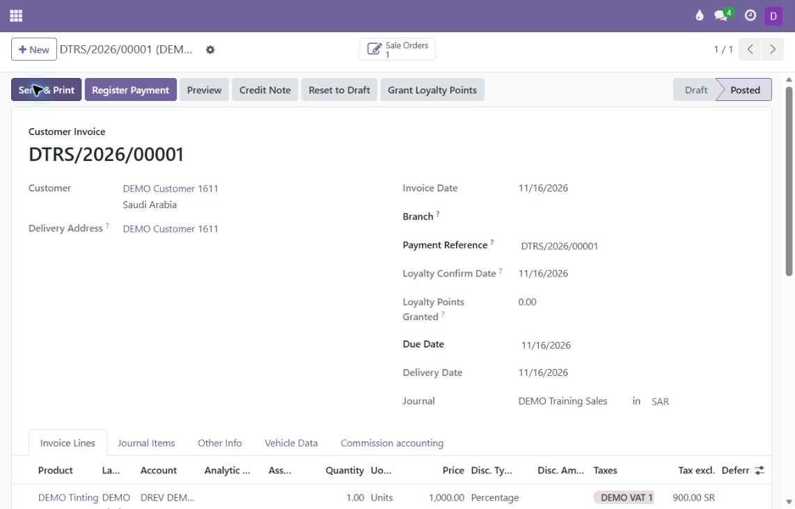
نفتح أمر بيع التدريب. العميل ديمو كاستمر، والمندوب أحمد، والفريق فرع التدريب. الخدمة ألف ريال، وخصم العميل عشرة في المية، فالصافي تسعمية. ضريبة الخمستاشر في المية تساوي مية خمسة وتلاتين، وإجمالي الفاتورة ألف خمسة وتلاتين. على الفاتورة نراجع نفس المندوب، والتاريخ في نوفمبر، والخدمة والتصنيف. وهي درافت لسه مفيش عمولة ستوديو. لما نضغط كونفيرم وتبقى بوستد، التحقيق الشخصي تسعمية على تسعمية يساوي مية في المية. شريحة الخدمة أربعة في المية، ومع خصم عشرة مفيش تعديل. يبقى تسعمية في أربعة في المية يساوي ستة وتلاتين ريال. الضريبة مش داخلة في العمولة، وأمر البيع لوحده مش بيكسب عمولة.
| اسم الحقل أو الخطوة | بتعمل إيه وإمتى تستخدمها |
|---|---|
| Salesperson / Sales Team on order | مصدر إسناد Studio؛ السطور المرتبطة بأوامر متعددة لازم تتفق |
| Invoice Salesperson | تستخدمه تسوية Commissions؛ وحّد المستخدم في المثال |
| Invoice Date | يحدد فترة الاحتساب والتارجت وقاعدة السريان |
| Discount / Taxes | العمولة على الصافي بعد الخصم ومن غير الضريبة |
| Draft / Posted | Studio يحسب بعد الترحيل؛ أمر البيع والمسودة لا يكسبوا عمولة |
| Down payments / Service advances | مستبعدة من قواعد الاحتساب هنا |
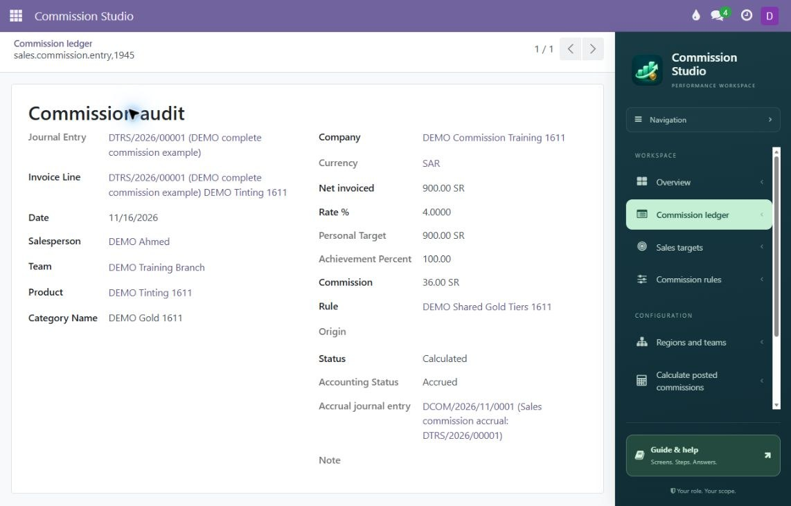
نفتح كوميشن ليدجر ونفتح سطر فاتورة التدريب. هنلاقي الفاتورة والمنتج والتصنيف والمندوب والفريق والقاعدة. بيس هو الصافي بعملة الشركة، وريت هي النسبة وقت الاحتساب، وبيرسونال تارجت تسعمية، وأتشيفمنت مية، والعمولة ستة وتلاتين. السجل ده للقراءة ومش للتعديل اليدوي. تغيير القاعدة بعد كده مش بيعيد كتابة اللقطة القديمة. لو رجعنا الفاتورة درافت وبعدين رحّلناها تاني، اللقطة بتتحسب من جديد بالقواعد السارية وقت إعادة الاحتساب. ولو ليها مرتجع مرحّل مرتبط، لازم التعامل مع المرتجع الأول. حركة العملات الأجنبية ليها تفاصيل، لكن المرتجع المرتبط بيحافظ على نسبة وقيمة العمولة الأصلية بالنسبة للكمية المرتجعة.
| اسم الحقل أو الخطوة | بتعمل إيه وإمتى تستخدمها |
|---|---|
| Base / Currency | القيمة الموقعة بعملة الشركة من السطر المحاسبي المرحّل |
| Rate / Amount | النسبة والعمولة المحفوظين وقت الاحتساب |
| Personal Target / Achievement % | لقطة نصيب المندوب ونسبة التحقيق وقت الترحيل |
| Rule / Category label | مرجع القاعدة واسم التصنيف المحفوظ |
| Origin / Original entry | يربط مرتجع العمولة بسطره الأصلي |
| Accounting Status / Accrual entry | Needs review / Zero / Not booked / Accrued ورابط قيد الاستحقاق |
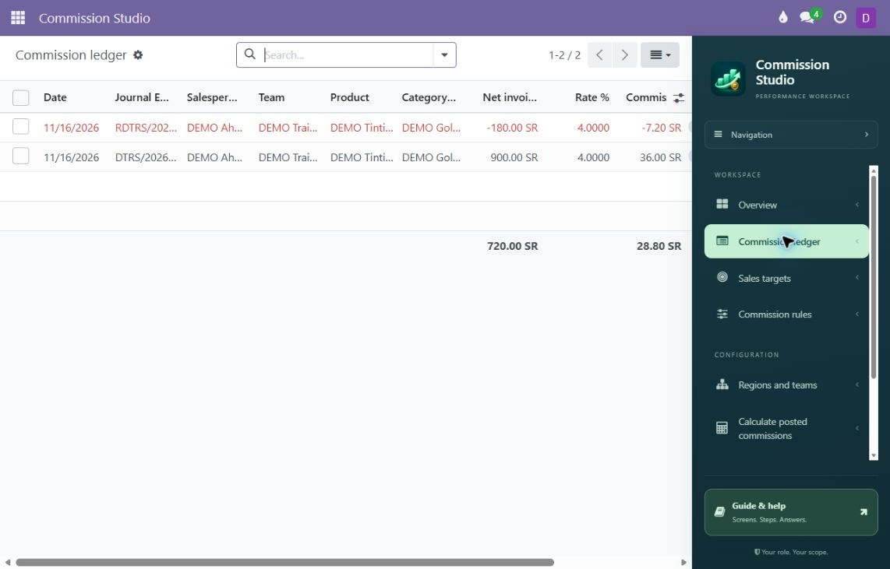
نرجع للفاتورة الأصلية ونستخدم كريديت نوت، عشان الربط بالأصل يبقى واضح. هنرجع عشرين في المية من الخدمة، يعني الكمية صفر فاصلة اتنين. الصافي مية وتمانين، والضريبة سبعة وعشرين، والإجمالي ميتين وسبعة. بعد ترحيل المرتجع، سجل ستوديو بيظهر أساس سالب مية وتمانين وعمولة سالب سبعة فاصلة اتنين، بنفس الأربعة في المية الأصلية. صافي عمولة المثال ستة وتلاتين ناقص سبعة فاصلة اتنين، يساوي تمانية وعشرين فاصلة تمانية. حتى لو التحقيق الحالي نزل بعد المرتجع، بنعكس نصيب المرتجع من العمولة الأصلية. المرتجع اليدوي أو الربط الملتبس ممكن يطلع نيدز ريفيو. استخدم العكس من الفاتورة الأصلية وراجع السطر الأصلي خصوصا مع تكرار نفس المنتج.
| اسم الحقل أو الخطوة | بتعمل إيه وإمتى تستخدمها |
|---|---|
| Credit Note | الأفضل إنشاؤها من الفاتورة الأصلية |
| Quantity = 0.20 | في المثال رجعنا خمس الخدمة: صافي180 وضريبة27 |
| Origin | المرجع الدقيق لسطر الفاتورة الأصلية، مهم مع تكرار المنتج |
| Rate | المرتجع المرتبط يحتفظ بنسبة الأصل؛ مش شريحة التحقيق الجديدة |
| Foreign currency | المرتجع الكامل يعكس العمولة الأصلية حتى مع اختلاف سعر الصرف؛ تقارير صافي الفاتورة تستخدم أرصدتها المرحّلة |
| Reset to Draft | يلغي اللقطة وإعادة الترحيل تعيد احتسابها؛ راجع المرتجعات المرتبطة أولًا |
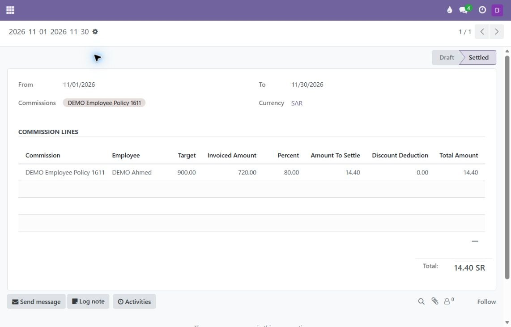
دلوقتي نرجع كوميشنز ونفتح سيتلمنتس. نعمل تسوية للشركة وفترة نوفمبر ونختار قاعدة الموظفين. نضغط سيتل، ونراجع السطور. صافي الفاتورة تسعمية ناقص مرتجع مية وتمانين يساوي سبعمية وعشرين. التحقيق على تارجت تسعمية يبقى تمانين في المية. في تسوية الموظفين الشريحة بتتحدد وقت التسوية على صافي الفترة، فعمولتنا هنا اتنين في المية، يعني أربعتاشر فاصلة أربعة ريال، وخصم عشرة ملوش تعديل. لاحظ الفرق المقصود: ستوديو احتفظ بلقطة الأربعة في المية وقت ترحيل الفاتورة، فصافي سجلّه تمانية وعشرين فاصلة تمانية. التسوية هنا أعادت تحديد شريحة الفترة عند تمانين في المية. دول نظامين منفصلين، فلا تجمعهم، وراجع سياسة الشركة قبل اعتماد المستحق.
| اسم الحقل أو الخطوة | بتعمل إيه وإمتى تستخدمها |
|---|---|
| Commissions | ممكن اختيار عدة سياسات؛ راجع التداخل لنفس الموظف |
| From / To / Company | فترة الفواتير المؤهلة والشركة |
| Settle | يولّد السطور ويغيّر الحالة إلى Settled |
| Invoiced Amount / Percent | صافي الفترة ونسبة تحقيقها وقت التسوية |
| Amount to Settle / Discount Deduction / Total | الأساسي، أثر الخصم، ثم الناتج النهائي |
| Invoices lines | الأصل المحاسبي للمراجعة؛ التسوية لا تنشئ دفعًا تلقائيًا |
| Cancel | يغير حالة التسوية؛ مش عكس قيد دفع |
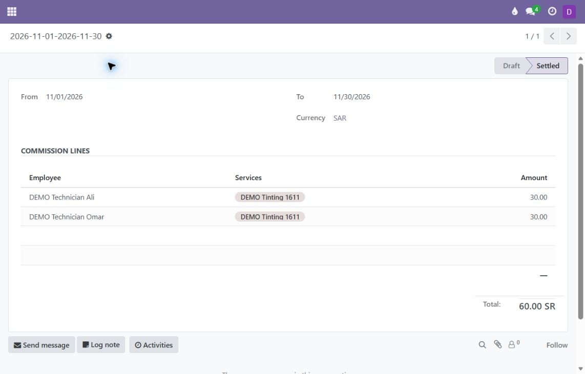
نفتح أمر العمل التدريبي ونراجع الخدمة والفنيين في ستاف. هنا عندنا فنيين تدريب، مش مستخدمين المبيعات. عمولة الخدمة من المنتج ستين ريال، فتتقسم تلاتين لكل فني. عشان تدخل التسوية، أمر العمل لازم يكون دون، والخدمة ليها ديت إند داخل الفترة. بعد كده نفتح تكنيشنز سيتلمنتس ونحدد من وإلى ونضغط سيتل. نشوف سطر لكل فني والمبلغ والخدمات. لو مفيش ستاف، الخدمة بتتعدى من غير توزيع. ونفس الخدمة لو اتكررت كمهمة مكتملة، كل تنفيذ بيتحسب، حتى لو قائمة أسماء المنتجات ما بتكررش الاسم. راجع أوامر العمل والفترة قبل الاعتماد، وتجنب تسويات متداخلة لنفس الشغل لأن الموديول مش سجل دفع بيمنع تكرار الصرف تلقائي.
| اسم الحقل أو الخطوة | بتعمل إيه وإمتى تستخدمها |
|---|---|
| Staff | الفنيون المعينون على الخدمة نفسها |
| Technicians Commission Amount | مبلغ ثابت من المنتج ÷ عدد Staff؛ بدون فنيين لا توزيع |
| Work Order State = Done | لازم أمر العمل يكون مكتمل |
| Service Date End | انتهاء الخدمة داخل الفترة؛ راجع أعمال آخر يوم لأن المقارنة بتاريخ/وقت |
| Settle / Amount / Services | حساب نصيب كل فني مع المنتجات/الخدمات المرتبطة |
| مراجعة الشركات والفترات | بحث خدمات تسوية الفنيين في النسخة الحالية لا يضيف شرط شركة صريح؛ راجع السطور في البيئات متعددة الشركات ولا تعتمد تسويات متداخلة كدفعات مستقلة |

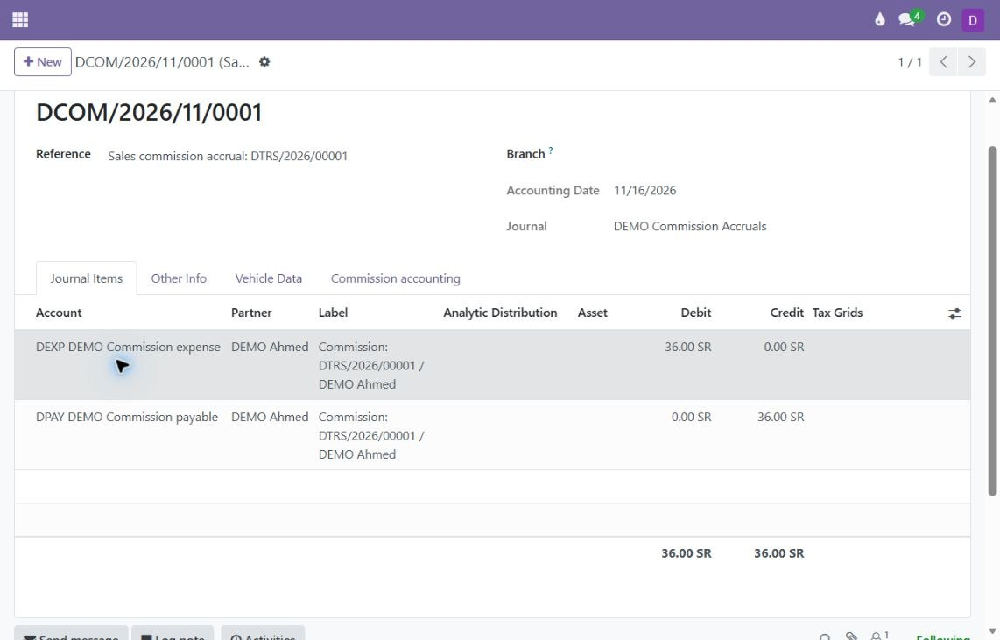
نرجع ستوديو. نيدز ريفيو معناها إعداد ناقص أو أصل البيع مش واضح، والعمولة صفر لحد المراجعة. نفتح السطر ونقرأ سبب المشكلة. كالكوليت بوستد كوميشنز بيحسب الفواتير التاريخية الناقصة في الشركة والفترة المختارة، بحد خمسمية فاتورة في الدفعة، وممكن يعيد محاولة سطور المراجعة بعد إصلاح السبب. بيحافظ على اللقطات المحسوبة، ومش بيرحّل قيود تاريخية في السر. في الداشبورد نختار الفترة والفريق، ونراجع صافي المبيعات وأثر المرتجعات والعمولة والتارجت والتحقيق وعدد المراجعات، ونفتح التفاصيل من الكروت. أما قيد المثال، فهو مدين مصروف ستة وتلاتين ودائن التزام ستة وتلاتين. المرتجع بيعكس سبعة فاصلة اتنين من نفس الحسابات الأصلية. دفع العمولة والتسوية البنكية خطوة منفصلة للمحاسبة، ومش زر هنا.
تحقيق الفريق في Dashboard =720 ÷1800 =40%
تحقيق أحمد الشخصي الحالي =720 ÷900 =80%
ولقطة الفاتورة الأصلية كانت100% قبل المرتجع
مثال المراجعة100 ريال في أكتوبر منفصل، فلا يدخل أرقام نوفمبر
| اسم الحقل أو الخطوة | بتعمل إيه وإمتى تستخدمها |
|---|---|
| Needs review / Reason | عمولة صفر مؤقتًا مع سبب نقص القاعدة أو غموض أصل البيع |
| Calculate posted commissions | احتساب تاريخي صريح للشركة والفترة؛ بحد500 فاتورة للدفعة |
| Retry review entries | إعادة المحاولة بعد إصلاح السبب؛ يحافظ على اللقطات الناجحة |
| Historical accrual booking | يتطلب Commission administrator وAccounting administrator معًا؛ احجز الأصل قبل المرتجع |
| Dashboard Period / Team | كل المقاييس ضمن الفلاتر والصلاحيات والشركات المختارة |
| Net invoiced / Credit note impact | صافي المبيعات بعد الخصم وقبل الضريبة وأثر المرتجعات |
| Net commission / Target / Achievement | صافي العمولة والهدف والتحقيق؛ الأب والفرع لا يتجمعوا مرتين |
| Accrual / Refund | مدين مصروف36 ودائن التزام36؛ المرتجع مدين التزام7.20 ودائن مصروف7.20 |
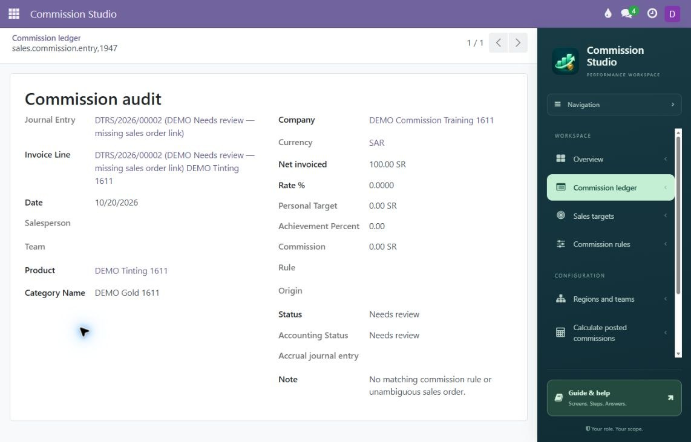
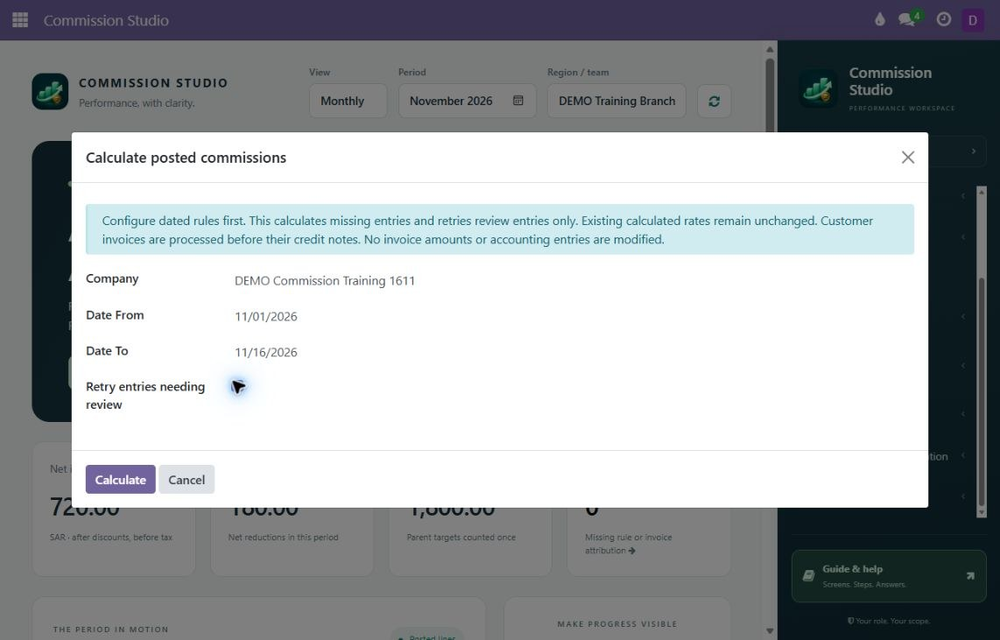

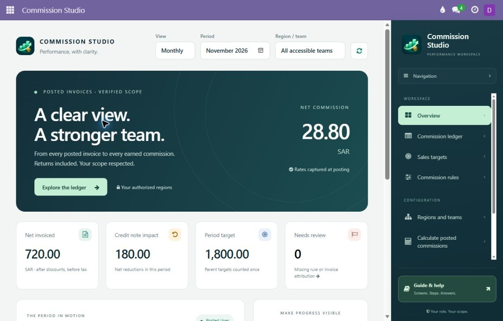
نراجع المثال مرة أخيرة. سعر ألف، خصم عشرة، صافي تسعمية، ضريبة مية خمسة وتلاتين. تارجت أحمد تسعمية، وتحقيق وقت الترحيل مية في المية. ستوديو سجّل ستة وتلاتين، والمرتجع عشرين في المية خصم سبعة فاصلة اتنين، فالصافي تمانية وعشرين فاصلة تمانية. تسوية الموظف حسبت الفترة بعد المرتجع، فتحقيقها تمانين في المية ونسبتها اتنين، ونتيجتها أربعتاشر فاصلة أربعة. الفنيين ليهم ستين عن الخدمة المكتملة، تلاتين لكل واحد. قبل أي اعتماد راجع الشركة والفترة والمندوب والتصنيف والتارجت والشرائح والخصم والمرتجعات وستاف وتاريخ الانتهاء وحالة أمر العمل. تحت الفيديو هتلاقي نفس الشرح مكتوب، وأسماء الحقول ومعناها، ومثال بالأرقام، وزر يفتح كل جزء في وقته.
| اسم الحقل أو الخطوة | بتعمل إيه وإمتى تستخدمها |
|---|---|
| Studio | 36 − 7.20 = 28.80؛ لقطة4% ثم عكس نصيب الأصل |
| Employee settlement | 720 ÷900 =80%؛ شريحة2%؛ الناتج14.40 |
| Technicians | 60 ÷2 =30 لكل فني؛ إجمالي60 |
| اعتماد المستحق | راجع السياسة قبل الجمع بين أي نظامين؛ الأمثلة لا تحدد سياسة الشركة |
١٣٤ خانة ونقطة شرح في الموديولين، تشمل المدخلات والنتائج المحسوبة وروابط المراجعة والحقول الداخلية. الحقول العادية في أودو مذكورة لما تؤثر على الحساب. كل خانة معاها دورها العملي في النظام وتأثيرها على النتيجة.
الفيديو يبدأ بالمثال الكامل، وبعده شرح الحقول واحدة واحدة. اضغط على أي خانة للانتقال لتعليقها مباشرة. صور أودو المعروضة من مثال تدريبي؛ بطاقة الشرح بجانبها توضح الحقل الحالي.
Products → افتح متغير الخدمة
ليه موجودة؟ عشان النظام يفرق بين الخدمة والبضاعة
بتعمل إيه؟ ومثال استخدامها
مسؤول المنتجات بيختار Service للخدمة. ستوديو بيختار تصنيف العمولة المناسب حسب النوع، فتغيير النوع ممكن يغير القاعدة المطابقة.
ليه موجودة؟ عشان خدمات مختلفة تشترك في نفس سياسة العمولة
بتعمل إيه؟ ومثال استخدامها
مسؤول المنتجات بيربط متغير الخدمة بتصنيف زي DEMO Gold. نفس التصنيف بيتستخدم في الموديولين، لكن كل موديول بيحسب لوحده.
ليه موجودة؟ عشان تقدر تميز مجموعة الخدمات في القواعد
بتعمل إيه؟ ومثال استخدامها
في Service categories بتكتب اسم واضح زي Gold. الاسم للتعريف، مش نسبة عمولة؛ النسبة بتتحط جوه القاعدة.
ليه موجودة؟ عشان عمولة البضاعة يبقى ليها تصنيف مستقل
بتعمل إيه؟ ومثال استخدامها
ده تصنيف المنتج العادي. ستوديو بيطابق التصنيف المحدد للبضاعة؛ مش هو Commission Category بتاع الخدمة، وماتعتمدش على الأب كأنه مطابق تلقائي.
ليه موجودة؟ عشان عمولة التنفيذ تبقى مبلغ ثابت مستقل عن البيع
بتعمل إيه؟ ومثال استخدامها
مسؤول المنتج بيكتب ستين في المثال. دي عمولة الخدمة كلها، بتتقسم على الفنيين، ومش ستين لكل فني ولا ستين في المية.
ليه موجودة؟ عشان يبقى عندنا أساس لسعر البيع في المثال
بتعمل إيه؟ ومثال استخدامها
ده حقل أودو عادي بنستخدمه: ألف ريال قبل خصم العميل. عمولة المبيعات الفعلية بتقرأ صافي السطر المرحل، مش السعر المكتوب هنا مباشرة.
Commissions → Configuration → Commissions
ليه موجودة؟ عشان تميز سياسة عمولة عن التانية
بتعمل إيه؟ ومثال استخدامها
مدير العمولات بيسميها مثلا سياسة موظفين نوفمبر. الاسم مش بيحدد السريان؛ الفترة بتتحدد في التسوية.
ليه موجودة؟ عشان تقدر تأرشف سياسة قديمة من غير حذفها
بتعمل إيه؟ ومثال استخدامها
المدير بيوقف السياسة لما يبطل استخدامها. راجع اختيار السياسات في التسوية، وماتعتبرش الأرشفة عكس لنتائج تسوية قديمة.
ليه موجودة؟ عشان كل مجموعة خدمات يبقى ليها نسبة مناسبة
بتعمل إيه؟ ومثال استخدامها
المدير بيختار تصنيف Gold في سطر الشريحة. السطور المؤهلة لازم تكون منتجاتها مرتبطة بنفس تصنيف العمولة.
ليه موجودة؟ عشان نحدد بداية شريحة تحقيق التارجت
بتعمل إيه؟ ومثال استخدامها
هنا رقم نسبة تحقيق، مش قيمة بيع. صفر يعني بداية الشريحة عند تحقيق صفر في المية.
ليه موجودة؟ عشان نحدد نهاية شريحة التحقيق
بتعمل إيه؟ ومثال استخدامها
هنا الحد شامل الطرف، والصفر حد فعلي مش مفتوح. اكتب تسعة وتسعين فاصلة تسعة وتسعين للشريحة الأولى وتجنب تداخل الحدود.
ليه موجودة؟ عشان نحول صافي البيع لعمولة
بتعمل إيه؟ ومثال استخدامها
اكتب اتنين للشريحة الأولى وأربعة عند تحقيق مية. صافي سبعمية وعشرين في اتنين في المية يطلع أربعتاشر فاصلة أربعة.
ليه موجودة؟ عشان نحدد أول خصم عميل ينطبق عليه التعديل
بتعمل إيه؟ ومثال استخدامها
هنا From مختلف: نسبة الخصم على سطر الفاتورة، مش نسبة تحقيق التارجت. واحد يعني خصم واحد في المية.
ليه موجودة؟ عشان نحدد آخر خصم في نفس النطاق
بتعمل إيه؟ ومثال استخدامها
الحدود شاملة. خلي مثلا واحد لعشرة من غير تعديل، وتجنب أي فجوة أو تداخل غير مقصود بين صفوف السياسة.
ليه موجودة؟ عشان نشجع البيع بخصم أقل أو نقلل العمولة مع الخصم
بتعمل إيه؟ ومثال استخدامها
القيمة الموجبة بتزوّد العمولة نفسها والسالبة بتقللها. عمولة أربعين مع موجب عشرين تبقى تمانية وأربعين، ومع سالب خمسة وعشرين تبقى تلاتين.
Commissions → Configuration → Targets
ليه موجودة؟ عشان تعمم تارجت واحد على أصحاب نفس الوظيفة
بتعمل إيه؟ ومثال استخدامها
مدير العمولات بيختار الوظيفة في Targets by job position. الموظفين الموجودين على الوظيفة وقت الحساب بياخدوا القيمة المحددة.
ليه موجودة؟ عشان نعرف المطلوب من الموظف قبل تحديد شريحته
بتعمل إيه؟ ومثال استخدامها
اكتب قيمة المبيعات المستهدفة، مثلا تسعمية. ده مبلغ، مش نسبة عمولة، ومش بيتوزع تلقائي بين أصحاب الوظيفة.
ليه موجودة؟ عشان نعمل استثناء لموظف بعينه
بتعمل إيه؟ ومثال استخدامها
في Targets by employee اختار DEMO Ahmed. لو له تارجت وظيفة وتارجت موظف، قيمة الموظف هي اللي تكسب.
ليه موجودة؟ عشان يبقى للموظف هدف خاص مناسب له
بتعمل إيه؟ ومثال استخدامها
اكتب تسعمية في المثال. لو القيمة صفر فنسبة التحقيق تتحسب صفر؛ ماتستخدمش الصفر بمعنى تارجت مفتوح.
ليه موجودة؟ عشان مبيعات الفواتير تتنسب للموظف الصحيح
بتعمل إيه؟ ومثال استخدامها
في ملف الموظف اربطه بمستخدم أودو. التسوية بتجمع فواتير Invoice Salesperson اللي هو نفس المستخدم، فالربط الناقص يضيّع المبيعات من الحساب.
Commissions → Settlements → افتح تسوية
ليه موجودة؟ عشان تحدد أول يوم فواتير يدخل التسوية
بتعمل إيه؟ ومثال استخدامها
المدير بيختار بداية الفترة، مثلا أول نوفمبر. المقارنة بتاريخ الفاتورة، والفواتير لازم تكون مرحلة.
ليه موجودة؟ عشان تقفل نطاق الفواتير عند نهاية واضحة
بتعمل إيه؟ ومثال استخدامها
اختار تلاتين نوفمبر. المرتجعات المرحلة داخل الفترة بتقلل الصافي، حتى لو تاريخ البيع الأصلي أقدم.
ليه موجودة؟ عشان تحدد السياسات اللي هتولد منها سطور
بتعمل إيه؟ ومثال استخدامها
المدير بيختار سياسة أو أكتر. لو نفس الموظف موجود في سياسات متداخلة ممكن تظهر له نتائج متعددة، فراجع التكرار.
ليه موجودة؟ عشان تفصل فواتير كل شركة
بتعمل إيه؟ ومثال استخدامها
اختار شركة التدريب. تسوية الموظفين بتفلتر سطور الفواتير بالشركة، فاختيار شركة غلط يغيّر المبيعات الداخلة.
ليه موجودة؟ عشان الأرقام يبقى ليها وحدة واضحة
بتعمل إيه؟ ومثال استخدامها
النظام بيستخدم عملة الشركة افتراضيا. الأساس من رصيد السطر المحاسبي بعملة الشركة، مش مجرد إجمالي فاتورة بعملة أجنبية.
ليه موجودة؟ عشان تفرق بين مسودة وتسوية مقفولة وملغاة
بتعمل إيه؟ ومثال استخدامها
بيبدأ Draft. زر Settle يولد النتائج ويخليها Settled. Cancel يغير الحالة، ومش بيلغي دفعة لأن التسوية مش بتدفع تلقائي.
ليه موجودة؟ عشان تعرف النتيجة جاية من أنهي سياسة
بتعمل إيه؟ ومثال استخدامها
النظام بيملاه في كل سطر. استخدمه لما تقارن موظف ظهر في أكتر من سياسة، بدل ما تجمع السطور من غير مراجعة.
ليه موجودة؟ عشان كل نتيجة يبقى ليها صاحب واضح
بتعمل إيه؟ ومثال استخدامها
النظام بيملاه من إعداد التارجت. هنا النتيجة تخص الموظف المرتبط بمندوب الفاتورة، مش بالضرورة مندوب أمر البيع.
ليه موجودة؟ عشان تحتفظ بقيمة الهدف المستخدمة في التسوية
بتعمل إيه؟ ومثال استخدامها
النظام بيكتب تسعمية في المثال. ده تارجت الموظف المختار وقت توليد السطر، مش إجمالي تارجت فريق ستوديو.
ليه موجودة؟ عشان تشوف صافي المبيعات المؤهلة قبل حساب العمولة
بتعمل إيه؟ ومثال استخدامها
النظام يجمع الفواتير ويطرح المرتجعات بدون الضريبة وبعد الخصم. تسعمية ناقص مية وتمانين يطلع سبعمية وعشرين.
ليه موجودة؟ عشان تختار شريحة التحقيق المناسبة
بتعمل إيه؟ ومثال استخدامها
ده تحقيق التارجت، مش نسبة العمولة. سبعمية وعشرين على تسعمية في مية يساوي تمانين في المية.
ليه موجودة؟ عشان تراجع العمولة الأساسية قبل أثر خصم العميل
بتعمل إيه؟ ومثال استخدامها
النظام يطبق نسبة الشريحة على السطور المطابقة. هنا سبعمية وعشرين في اتنين في المية يساوي أربعتاشر فاصلة أربعة.
ليه موجودة؟ عشان أثر سياسة الخصم يبقى ظاهر لوحده
بتعمل إيه؟ ومثال استخدامها
الإجمالي يساوي الأساسي ناقص الحقل ده. لو السياسة بتزوّد العمولة ممكن القيمة تظهر سالبة؛ السالب هنا بيزود الناتج لما يتطرح.
ليه موجودة؟ عشان تعرض النتيجة النهائية للموظف والسياسة
بتعمل إيه؟ ومثال استخدامها
النظام بيحسب الأساسي ناقص أثر الخصم. مع خصم عشرة في المية وتعديل صفر النتيجة هنا أربعتاشر فاصلة أربعة.
ليه موجودة؟ عشان تقدر ترجع للمستندات اللي بنت النتيجة
بتعمل إيه؟ ومثال استخدامها
افتح سطر التسوية وشوف روابط سطور الفواتير المطابقة. دي للمراجعة، ومش مكان تعديل العمولة يدوي.
ليه موجودة؟ عشان تعرف مجموع التسوية كلها
بتعمل إيه؟ ومثال استخدامها
النظام بيجمع Total Amount لكل السطور. Generate Commissions يعيد بناء السطور، وSettle بيعيد الحساب كمان، فراجع النتائج قبل اعتمادها.
Work Orders → Services، ثم Commissions → Technicians Settlements
ليه موجودة؟ عشان العمولة تروح للي نفذوا الخدمة فعلا
بتعمل إيه؟ ومثال استخدامها
مشرف الورشة بيراجع الفنيين على سطر الخدمة نفسه. علي وعمر في المثال بيتقاسموا الستين؛ تغيير Staff يغير نصيب كل فني.
ليه موجودة؟ عشان الخدمة غير المكتملة ماتدخلش التسوية
بتعمل إيه؟ ومثال استخدامها
أمر العمل لازم يكون Done. وجود فاتورة مرحلة لوحده مش شرط كفاية لعمولة الفني، لأن الحساب هنا مرتبط بالتنفيذ.
ليه موجودة؟ عشان كل تنفيذ يدخل فترة واحدة واضحة
بتعمل إيه؟ ومثال استخدامها
ده تاريخ ووقت انتهاء الخدمة. راجع أعمال آخر يوم بعناية لأن فلتر التسوية الحالي بيقارن تاريخ بداية ونهاية بتاريخ ووقت.
ليه موجودة؟ عشان تحدد أول تنفيذ يدخل الحساب
بتعمل إيه؟ ومثال استخدامها
المدير بيحدد بداية الفترة هنا حسب انتهاء الخدمة، مش حسب تاريخ الفاتورة زي تسوية الموظفين.
ليه موجودة؟ عشان تحدد آخر تنفيذ يدخل الحساب
بتعمل إيه؟ ومثال استخدامها
راجع التوقيت ونهاية اليوم، وتجنب تسويات بفترات متداخلة لنفس التنفيذ عشان ماتتعاملش مع نفس النتيجة كاستحقاق جديد مرتين.
ليه موجودة؟ عشان التسوية تبقى منسوبة للشركة الصح
بتعمل إيه؟ ومثال استخدامها
راجع سطور النتائج في بيئة متعددة الشركات؛ البحث الحالي للخدمات مافيهوش شرط شركة صريح، فالحقل لوحده مش كفاية لضمان عزل التنفيذ.
ليه موجودة؟ عشان تعرض مبالغ الفنيين بوحدة واضحة
بتعمل إيه؟ ومثال استخدامها
عملة التسوية بتاخد عملة الشركة افتراضيا. مبلغ الفني ثابت من المنتج ومش نسبة من الفاتورة ولا الضريبة.
ليه موجودة؟ عشان كل فني يبقى له إجمالي مستقل
بتعمل إيه؟ ومثال استخدامها
النظام بيجمع نصيبه من الخدمات المكتملة المؤهلة. مع فنيين على خدمة عمولتها ستين، علي تلاتين وعمر تلاتين.
ليه موجودة؟ عشان تراجع أنواع الخدمات اللي شارك فيها الفني
بتعمل إيه؟ ومثال استخدامها
الروابط هنا لمنتجات الخدمات، مش سجل كامل لكل تنفيذ بالتاريخ. ارجع لأمر العمل لو محتاج تحقق تفصيلي لكل مرة تنفيذ.
ليه موجودة؟ عشان تجمع نصيب الفني من كل الخدمات المؤهلة
بتعمل إيه؟ ومثال استخدامها
لكل خدمة المبلغ الثابت بيتقسم بالتساوي على عدد Staff. الخدمة اللي مافيهاش فنيين مابيتمش توزيع عمولتها.
ليه موجودة؟ عشان تراجع إجمالي الفنيين وحالة التسوية
بتعمل إيه؟ ومثال استخدامها
الإجمالي هنا ستين. Generate Commissions يعيد السطور، وSettle يعيدها ويقفل الحالة. ده حساب مستحقات، مش صرف تلقائي.
Regions and teams؛ Settings → Users → Commission Access
ليه موجودة؟ عشان تفرق بين المنطقة والفرع في التقارير
بتعمل إيه؟ ومثال استخدامها
مدير العمولات بيكتب اسم واضح. الاسم بيظهر على القواعد والتارجت والسجل، لكنه مش بيمنح صلاحية لوحده.
ليه موجودة؟ عشان الهيكل والقواعد يفضلوا جوه نفس الشركة
بتعمل إيه؟ ومثال استخدامها
اختار الشركة المالكة للفريق. الأب والابن لازم يبقوا متوافقين في الشركة، والمستخدم يبقى مسموح له بالشركة.
ليه موجودة؟ عشان نحدد مكان الفريق في الهيكل
بتعمل إيه؟ ومثال استخدامها
اختار Region أو Subregion أو Branch. الفرع مستوى أدنى من المنطقة الفرعية، ومش مسموح تعمل دورة في الهيكل.
ليه موجودة؟ عشان نجمع الفروع تحت منطقة ونعرف نطاق المدير
بتعمل إيه؟ ومثال استخدامها
اربط الفرع بأب أعلى منه في نفس الشركة. تقارير المنطقة تشمل الأبناء مرة واحدة، من غير تكرار نفس السطر.
ليه موجودة؟ عشان قيادة الفريق تحدد نطاق الإدارة تلقائي
بتعمل إيه؟ ومثال استخدامها
اختار القائد. النطاق يشمل فرق قيادته والأبناء، لكن المستخدم لازم ياخد دور Region manager عشان يستفيد بالصلاحية.
ليه موجودة؟ عشان تدي إدارة إضافية لفريق خارج القيادة
بتعمل إيه؟ ومثال استخدامها
اختيار اختياري لمدير عمولات صريح. نقل الإسناد بين مديرين ينقل الإضافة دي، ومش بيلغي نطاق قائد الفريق التلقائي.
ليه موجودة؟ عشان نحدد مين أعضاء الفريق والتوزيع يشمل مين
بتعمل إيه؟ ومثال استخدامها
اختار أحمد ومنى في التدريب. العضوية لوحدها مش دور مدير منطقة، لكنها بتدخل ضمن الأشخاص المتاح لهم نصيب تارجت الفريق.
ليه موجودة؟ عشان تحدد نوع الوصول بوضوح من مكان واحد
بتعمل إيه؟ ومثال استخدامها
مدير الإعدادات يختار No access أو Salesperson أو Region manager أو Commission administrator. المندوب يشوف نفسه، والمدير نطاقه، والإدارة الشركات المسموحة.
ليه موجودة؟ عشان توضح النطاق الناتج من قيادة الفرق
بتعمل إيه؟ ومثال استخدامها
ده للقراءة، بيتحدث من Team Leader مع الفروع التابعة. لو فاضي ومعندكش نطاق إضافي، المدير هيشوف عمولاته الشخصية بس.
ليه موجودة؟ عشان تضيف نطاق إدارة خارج فرق القيادة
بتعمل إيه؟ ومثال استخدامها
إعداد اختياري لأدوار المدير والإدارة. اختار المنطقة الإضافية بدل تكرار كل فرع، وراجع الشركات المسموحة للمستخدم.
ليه موجودة؟ عشان تعرف هل المستخدم مؤهل لحجز الاستحقاق القديم
بتعمل إيه؟ ومثال استخدامها
ده مؤشر للقراءة. لازم Commission Administrator وكمان Accounting Administrator. تبويب العمولات نفسه مش بيمنح صلاحيات المحاسبة.
Commission Studio → Sales targets
ليه موجودة؟ عشان التارجت يبقى بنفس شركة المبيعات
بتعمل إيه؟ ومثال استخدامها
مدير العمولات بيحدد الشركة. مبلغ الهدف بعملتها، وماتخلطش بين مبيعات شركتين في نسبة تحقيق واحدة.
ليه موجودة؟ عشان نعرف مبيعات وأنصبة أنهي فريق
بتعمل إيه؟ ومثال استخدامها
اختار فرع التدريب. المندوب على الفاتورة الأصلية بيحتاج نصيبه الشخصي في تارجت الفريق والفترة المناسبين.
ليه موجودة؟ عشان الهدف يدعم دورات متابعة مختلفة
بتعمل إيه؟ ومثال استخدامها
اختار Monthly أو Quarterly أو Half-yearly أو Yearly. الربع سنوي يبدأ يناير أو أبريل أو يوليو أو أكتوبر.
ليه موجودة؟ عشان تحدد أول يوم في دورة الهدف
بتعمل إيه؟ ومثال استخدامها
ده ظاهر بالاسم ده رغم إن اسمه التقني month. أول نوفمبر لهدف شهري؛ لازم أول يوم وأول شهر في الفترة، والفترات لنفس الفريق ماتتداخلش.
ليه موجودة؟ عشان نهاية الفترة تتحسب صح من غير خطأ يدوي
بتعمل إيه؟ ومثال استخدامها
النظام بيحسبها من البداية ونوع الفترة. أول نوفمبر شهري ينتهي تلاتين نوفمبر، ومش محتاج تكتب النهاية بنفسك.
ليه موجودة؟ عشان نحدد إجمالي المطلوب من الفريق
بتعمل إيه؟ ومثال استخدامها
اكتب ألف وتمانمية. ده إجمالي الفريق، مش هدف كل شخص، ومجموع الأنصبة الفردية لازم يساويه قبل حساب الشرائح.
ليه موجودة؟ عشان كل جزء من الهدف يبقى منسوب لشخص
بتعمل إيه؟ ومثال استخدامها
في جدول الأنصبة اختار عضو أو مدير للفريق. نفس الشخص ماينفعش يتكرر في نفس التارجت، وزر التوزيع بيشمل الأعضاء والقادة والمدير الصريح الحاليين.
ليه موجودة؟ عشان الحساب يستخدم هدف الشخص الحقيقي
بتعمل إيه؟ ومثال استخدامها
أحمد تسعمية ومنى تسعمية. القيمة ماتكونش سالبة، ونصيب المندوب لازم يبقى موجب للشرائح. زر التوزيع يستبدل الأنصبة القديمة، فراجع قبل الضغط.
Commission Studio → Commission rules
ليه موجودة؟ عشان تقدر ترجع للسياسة من سجل العمولة
بتعمل إيه؟ ومثال استخدامها
المدير بيسمي القاعدة باسم مفهوم. الاسم بيتربط بالسجل، لكنه مش بديل عن الشركة وتواريخ السريان والتصنيف.
ليه موجودة؟ عشان توقف استخدام قاعدة للمستقبل من غير حذف تاريخها
بتعمل إيه؟ ومثال استخدامها
المدير يأرشفها لما تنتهي الحاجة ليها. اللقطات المحسوبة قبل كده بتحتفظ بالنسب المحفوظة، ومش بتتمسح بالأرشفة.
ليه موجودة؟ عشان القاعدة ماتتنطبقش على شركة تانية
بتعمل إيه؟ ومثال استخدامها
اختار شركة التدريب. اختيار المستخدمين والفريق والتصنيفات لازم يطابق نطاق الشركة المسموح.
ليه موجودة؟ عشان نفس الشاشة تدعم قاعدة شخصية وقاعدة فريق
بتعمل إيه؟ ومثال استخدامها
Salespeople لواحد أو أكتر، وSales team لفريق محدد بالضبط. قاعدة الفريق مش بتشمل الأبناء تلقائي، والشخصية تتقدم لنفس التصنيف والتاريخ.
ليه موجودة؟ عشان تشارك قاعدة واحدة بين عدة مندوبين
بتعمل إيه؟ ومثال استخدامها
اختار أحمد ومنى بدل نسخ نفس النسب مرتين. الحقل بيظهر في نطاق الأشخاص، والمستخدمين لازم يكونوا داخليين ومسموح لهم بالشركة.
ليه موجودة؟ عشان تحدد الفريق اللي تنطبق عليه القاعدة الافتراضية
بتعمل إيه؟ ومثال استخدامها
الحقل بيظهر لما Scope يبقى فريق. اختار الفرع نفسه لو المبيعات منسوبة له؛ اختيار المنطقة الأم مش هيطابق الفرع تلقائي.
ليه موجودة؟ عشان تعرف القاعدة تبدأ على فواتير إمتى
بتعمل إيه؟ ومثال استخدامها
المدير يحدد بداية السريان. المطابقة حسب تاريخ الفاتورة، مش تاريخ فتح الشاشة، والتداخل في نفس النطاق والتصنيف مرفوض.
ليه موجودة؟ عشان تحدد نهاية صلاحية السياسة
بتعمل إيه؟ ومثال استخدامها
المدير يحدد نهاية السريان. جهز القاعدة الجديدة بتاريخ واضح، وماتتوقعش تغيير السياسة يعيد حساب اللقطات القديمة تلقائي.
ليه موجودة؟ عشان تفرق بين قاعدة بضاعة وخدمة من غير شرائح
بتعمل إيه؟ ومثال استخدامها
لو مافيش Achievement Tiers اختار Product أو Service. نوع التصنيف يحدد هل تختار Product Category ولا Service Category.
ليه موجودة؟ عشان تحدد التصنيف الوحيد للقاعدة الثابتة
بتعمل إيه؟ ومثال استخدامها
اختار التصنيف المناسب للنوع. مع إضافة الشرائح الحقول الثابتة بتختفي؛ كل سطر شريحة بقى له تصنيفه ونسبته.
ليه موجودة؟ عشان تدعم عمولة لا تتغير مع التحقيق
بتعمل إيه؟ ومثال استخدامها
من غير شرائح اكتب مثلا أربعة. القاعدة الثابتة مش محتاجة تارجت عشان تختار نسبة، لكن لازم باقي شروط المصدر والتصنيف صحيحة.
ليه موجودة؟ عشان تعرض سياق الأهداف الحالية للاختيارات
بتعمل إيه؟ ومثال استخدامها
ده محسوب للقراءة، وممكن يبقى مجموع أنصبة الأشخاص المختارين. مش هدف كل مندوب، واللقطة بتستخدم نصيب مندوب السطر نفسه.
ليه موجودة؟ عشان سياسة الخصم تأثر على مكافأة البيع
بتعمل إيه؟ ومثال استخدامها
لو فعلته: خصم صفر يزود عشرين في المية، وواحد لعشرة ثابت، وعشرة فاصلة صفر واحد لعشرين يقلل خمسة وعشرين. غير كده محتاج مراجعة، حتى نص في المية.
ليه موجودة؟ عشان نفس القاعدة يبقى فيها شرائح لبضاعة وخدمات
بتعمل إيه؟ ومثال استخدامها
في كل سطر اختار Product أو Service. بعد النوع اختار التصنيف المناسب في عموده، وسيب عمود النوع الآخر.
ليه موجودة؟ عشان تحدد بضاعة أنهي تصنيف تستخدم الشريحة
بتعمل إيه؟ ومثال استخدامها
بيتعبى لما النوع Product. المطابقة للتصنيف المحدد، فماتختارش تصنيف خدمة في العمود ده.
ليه موجودة؟ عشان تحدد خدمات أنهي تصنيف تستخدم الشريحة
بتعمل إيه؟ ومثال استخدامها
بيتعبى لما النوع Service. في المثال Gold، وهي نفس قيمة Commission Category على متغير الخدمة.
ليه موجودة؟ عشان تحدد أول تحقيق يدخل الشريحة
بتعمل إيه؟ ومثال استخدامها
ده تحقيق المندوب في فترته وعلى نصيبه الشخصي. ابدأ الشريحة الأعلى عند مية، وماتخلطش الرقم بنسبة العمولة.
ليه موجودة؟ عشان تحدد نهاية نطاق التحقيق
بتعمل إيه؟ ومثال استخدامها
في ستوديو تحديدا صفر معناه بدون حد أعلى. ده مختلف عن موديول Commissions. تجنب شرائح متداخلة لنفس التصنيف.
ليه موجودة؟ عشان تحدد المكافأة عند مستوى التحقيق ده
بتعمل إيه؟ ومثال استخدامها
أقل من مية اتنين، ومن مية أربعة في مثالنا. مع وجود شرائح لو مافيش شريحة مطابقة فالعمولة صفر؛ مش بيرجع للنسبة الثابتة.
Sales order → Invoice → Commission ledger
ليه موجودة؟ عشان ستوديو يعرف صاحب البيع الأصلي
بتعمل إيه؟ ومثال استخدامها
المبيعات بتحدد أحمد على أمر البيع. ستوديو يقرأه من السطور المرتبطة، ولو السطر راجع لأوامر مختلفة لازم الإسناد يبقى متفق.
ليه موجودة؟ عشان القاعدة والتارجت ونطاق المدير يبقوا صحيحين
بتعمل إيه؟ ومثال استخدامها
حدد فرع التدريب على أمر البيع. تغيير Invoice Salesperson لوحده مش بيغير مصدر إسناد ستوديو.
ليه موجودة؟ عشان تسوية Commissions تعرف موظف الفاتورة
بتعمل إيه؟ ومثال استخدامها
ده حقل أودو عادي. وحدناه مع مندوب أمر البيع في المثال، لكن الموديولين بيقروا مصدرين مختلفين فلازم تراجع الاتنين.
ليه موجودة؟ عشان تحدد فترة البيع وسريان القاعدة
بتعمل إيه؟ ومثال استخدامها
اختار تاريخ نوفمبر في المثال. ده اللي بيحدد فترة التارجت المناسبة، مش تاريخ تحصيل الفاتورة.
ليه موجودة؟ عشان نوصل لصافي البيع المؤهل
بتعمل إيه؟ ومثال استخدامها
واحد في ألف وخصم عشرة في المية يطلع تسعمية. عمولة المبيعات تعتمد على الصافي المرحل؛ الدفعات المقدمة وسلف الخدمات مستبعدة هنا.
ليه موجودة؟ عشان تفرق بين مبلغ العميل وأساس العمولة
بتعمل إيه؟ ومثال استخدامها
ضريبة مية خمسة وتلاتين تخلي الإجمالي ألف خمسة وتلاتين، لكن أساس العمولة تسعمية بس. الضرائب مش مكافأة للمندوب.
ليه موجودة؟ عشان العمولة تتسجل على مستند محاسبي مرحل
بتعمل إيه؟ ومثال استخدامها
Draft مافيهاش لقطة ستوديو؛ Posted يولدها. الرجوع لمسودة يشيل اللقطة وإعادة الترحيل تعيد حسابها، مع مراعاة المرتجعات المرحلة المرتبطة.
ليه موجودة؟ عشان ترجع من العمولة للفاتورة الأصلية
بتعمل إيه؟ ومثال استخدامها
النظام بيملأ الرابط، مش بتختاره يدوي. افتحه لو عاوز تراجع العميل والتاريخ وحالة المستند.
ليه موجودة؟ عشان تقدر تراجع أساس العمولة بدقة على مستوى السطر
بتعمل إيه؟ ومثال استخدامها
النظام بيربط سطر الفاتورة المحدد، وده مهم لو نفس المنتج متكرر أكتر من مرة أو ليه مرتجع جزئي.
ليه موجودة؟ عشان تعرف السطر تابع لأنهي فترة
بتعمل إيه؟ ومثال استخدامها
النظام بيحفظ تاريخ المستند. استخدمه مع فلاتر التقارير بدل ما تعتمد على تاريخ إنشاء سجل العمولة.
ليه موجودة؟ عشان تعرض صاحب لقطة البيع
بتعمل إيه؟ ومثال استخدامها
محفوظ من مصدر أمر البيع. الحسابات والفلترة الأمنية بتستخدمه، والسجل للقراءة مش مكان نقل عمولة يدوي لمندوب تاني.
ليه موجودة؟ عشان تعرف النتيجة تابعة لأنهي فريق
بتعمل إيه؟ ومثال استخدامها
محفوظ من المصدر، وبيحدد تجميعات المنطقة وصلاحيات المدير. الفريق هنا مختلف عن اختيار فلتر التقرير اللي بتشوفه.
ليه موجودة؟ عشان تعرف أنهي خدمة أو بضاعة ولدت المبلغ
بتعمل إيه؟ ومثال استخدامها
رابط المنتج للقراءة. راجع نوعه وتصنيفه لو النسبة صفر أو السطر محتاج مراجعة.
ليه موجودة؟ عشان يفضل تصنيف الحساب واضح وقت المراجعة
بتعمل إيه؟ ومثال استخدامها
النظام بيحفظ اسم التصنيف في اللقطة. ده بيساعد تفهم النتيجة حتى لو اتغير اسم التصنيف بعد كده.
ليه موجودة؟ عشان المبلغ يبقى منسوب للشركة وعملتها
بتعمل إيه؟ ومثال استخدامها
بيتملا تلقائي من السطر المرحل. مع عملة فاتورة أجنبية الأساس في السجل بعملة الشركة.
ليه موجودة؟ عشان تعرض المبلغ اللي اتطبقت عليه النسبة
بتعمل إيه؟ ومثال استخدامها
صافي موقع بعد الخصم ومن غير الضريبة. موجب للبيع وسالب للمرتجع؛ تسعمية في الأصل وسالب مية وتمانين للمرتجع.
ليه موجودة؟ عشان تحفظ النسبة المستخدمة وقت الحساب
بتعمل إيه؟ ومثال استخدامها
أربعة في المية في الأصل. تغيير القاعدة أو انخفاض التحقيق بعد المرتجع مش بيغير نسبة اللقطة المحفوظة تلقائي.
ليه موجودة؟ عشان تعرف مقام معادلة التحقيق وقت الترحيل
بتعمل إيه؟ ومثال استخدامها
النظام بيحفظ نصيب أحمد تسعمية. ده مش إجمالي الفريق ألف وتمانمية، ومش قيمة هدف حالي متغير على شاشة القاعدة.
ليه موجودة؟ عشان تقدر تفسر اختيار الشريحة
بتعمل إيه؟ ومثال استخدامها
لقطة الأصل مية في المية: تسعمية على تسعمية. بعد المرتجع التحقيق الحالي تمانين، لكن اللقطة القديمة تفضل مية.
ليه موجودة؟ عشان تعرض العمولة النهائية للسطر
بتعمل إيه؟ ومثال استخدامها
تسعمية في أربعة في المية يساوي ستة وتلاتين مع تعديل خصم صفر. المرتجع الجزئي يعكس سبعة فاصلة اتنين، فيبقى صافي ستوديو تمانية وعشرين فاصلة تمانية.
ليه موجودة؟ عشان تعرف أنهي سياسة أنتجت اللقطة
بتعمل إيه؟ ومثال استخدامها
النظام يربط القاعدة المطابقة. افتحها للفهم، لكن تعديلها مش بيعيد كتابة السطور المحسوبة بالفعل.
ليه موجودة؟ عشان المرتجع يعكس عمولة الأصل بدقة
بتعمل إيه؟ ومثال استخدامها
في المرتجع المرتبط ده رابط لقطة السطر الأصلي. بيحافظ على النسبة ونسبة المبلغ المرتجع، والمرتجع الكامل يعكس العمولة الأصلية حتى مع تغير الصرف.
ليه موجودة؟ عشان تفرق بين نتيجة محسوبة ومحتاجة تدخل
بتعمل إيه؟ ومثال استخدامها
Needs review معناها مصدر أو قاعدة غير واضحين، وغالبا عمولة صفر. راجع السبب بدل ما تعتبر الصفر تأكيد إن الموظف مالوش حق.
ليه موجودة؟ عشان تعرف سبب المراجعة من غير تخمين
بتعمل إيه؟ ومثال استخدامها
النظام بيكتب السبب، زي عدم وجود قاعدة أو أمر بيع واضح. صحح المصدر أو الإعداد ثم أعد محاولة سطور المراجعة.
Accounting configuration؛ Commission audit؛ Calculate posted commissions؛ Overview
ليه موجودة؟ عشان تفصل حساب العمولة عن إثباتها محاسبيا
بتعمل إيه؟ ومثال استخدامها
المحاسب يفعله لكل شركة لو مطلوب استحقاق تلقائي. التفعيل مش دفع للمندوب، ومش مسير مرتبات.
ليه موجودة؟ عشان القيود تتسجل في يومية واضحة
بتعمل إيه؟ ومثال استخدامها
اختار يومية متنوعة نشطة ومناسبة لنفس الشركة والعملة. اليومية مش حساب المصروف نفسه؛ دي دفتر تسجيل القيد.
ليه موجودة؟ عشان تكلفة العمولة تظهر في المصروفات
بتعمل إيه؟ ومثال استخدامها
اختار حساب مصروف صالح لنفس الشركة. عمولة ستة وتلاتين تعمل مدين مصروف ستة وتلاتين.
ليه موجودة؟ عشان تعرف الالتزام المستحق للمندوبين
بتعمل إيه؟ ومثال استخدامها
اختار حساب التزام مختلف عن المصروف. نفس الستة وتلاتين تبقى دائن التزام، والسداد خطوة مستقلة خارج الشرح ده.
ليه موجودة؟ عشان تفرق بين الحساب الرقمي والقيد المحاسبي
بتعمل إيه؟ ومثال استخدامها
فيه Needs review وZero وNot booked وAccrued. Pending أو Not booked معناها في نتيجة لسه محتاجة حجز، مش إن القيد اتعمل بالفعل.
ليه موجودة؟ عشان تراجع القيد اللي أثبت العمولة
بتعمل إيه؟ ومثال استخدامها
رابط تلقائي للقيد. افتحه وراجع المدين والدائن؛ المرتجع المرتبط يعكس حسابات الأصل، حتى لو الإعدادات الحالية اتغيرت أو اتقفلت.
ليه موجودة؟ عشان الفاتورة تجمع قيود عمولتها للمراجعة
بتعمل إيه؟ ومثال استخدامها
للمحاسب المؤهل بيعرض Name ورقم القيد، Date تاريخه، Ref مرجعه، Journal يوميته وState حالته. دي روابط مراجعة للقراءة.
ليه موجودة؟ عشان تعرف القيد اتعكس ولا لأ وتوصل للعكس
بتعمل إيه؟ ومثال استخدامها
النظام بيملأهم في قيود العمولة. المرجع يمنعك تعتبر قيد الأصل وقيد عكسه التزامين مستقلين، وبيعرض سلسلة المراجعة.
ليه موجودة؟ عشان حساب الماضي يبقى في شركة محددة
بتعمل إيه؟ ومثال استخدامها
مدير العمولات يختار الشركة قبل Calculate. العملية بتحسب السجلات الناقصة وبتسيب اللقطات المحسوبة زي ما هي.
ليه موجودة؟ عشان تحدد أول فاتورة قديمة محتاجة حساب
بتعمل إيه؟ ومثال استخدامها
اختار بداية الفترة المطلوبة، وجهز القواعد المؤرخة قبل الحساب. المستندات لازم تكون مرحلة.
ليه موجودة؟ عشان تحصر نهاية نطاق الحساب القديم
بتعمل إيه؟ ومثال استخدامها
اختار النهاية، وقسم الفترات الكبيرة. كل دفعة حدها خمسمية فاتورة، والفواتير الأصلية بتتعالج قبل المرتجعات.
ليه موجودة؟ عشان تعيد محاولة المشاكل بعد تصحيح سببها
بتعمل إيه؟ ومثال استخدامها
فعله لو أصلحت قاعدة أو مصدر سطر Needs review. مش بيعيد تسعير اللقطات المحسوبة، ومش بيحجز قيود تاريخية بصمت.
ليه موجودة؟ عشان تقرأ أرقام متجانسة لنفس النطاق
بتعمل إيه؟ ومثال استخدامها
اختار الفترة والفريق. نفس صلاحيات المستخدم بتتطبق على الداشبورد والقوائم والتقارير والتصدير، والفلتر مش بيمنح وصول إضافي.
ليه موجودة؟ عشان تفرق بين البيع وأثر المرتجع
بتعمل إيه؟ ومثال استخدامها
في نوفمبر تسعمية ناقص مية وتمانين يساوي سبعمية وعشرين. القيم من صافي السطور، مش من الإجمالي شامل الضريبة.
ليه موجودة؟ عشان تعرف مجموع اللقطات الموجبة والسالبة
بتعمل إيه؟ ومثال استخدامها
هنا ستة وتلاتين ناقص سبعة فاصلة اتنين يساوي تمانية وعشرين فاصلة تمانية. مش هو نتيجة تسوية Commissions أربعتاشر فاصلة أربعة.
ليه موجودة؟ عشان تتابع التقدم مقابل الهدف المناسب
بتعمل إيه؟ ومثال استخدامها
أحمد تمانين في المية حاليا، والفريق أربعين: سبعمية وعشرين على ألف وتمانمية. لازم تعرف الرقم فردي ولا فريق قبل المقارنة.
ليه موجودة؟ عشان تراجع حركة الأيام ومساهمة كل شخص والمشاكل
بتعمل إيه؟ ومثال استخدامها
دي نتائج محسوبة، مش مدخلات عمولة جديدة. راجع Needs review قبل اعتماد الأرقام، واستخدم Group by أو Pivot للتحليل من غير تكرار إجمالي الأب والأبناء.
حقول تقنية محفوظة؛ بعضها لا يظهر في نموذج المستخدم العادي
ليه موجودة؟ عشان ترتب قائمة تصنيفات العمولة
بتعمل إيه؟ ومثال استخدامها
ده ترتيب عرض بس، بيتغير بالسحب من مقبض القائمة. مابيغيرش نسبة العمولة ولا أولوية القواعد.
ليه موجودة؟ عشان التصنيف القديم يتأرشف بدل ما يتمسح
بتعمل إيه؟ ومثال استخدامها
حقل داخلي افتراضي. اسم التصنيف في النموذج العادي بيتكتب عند الإنشاء وبيبقى للقراءة بعد الحفظ؛ مش كل حقل داخلي لازم يظهر كخانة إدخال.
ليه موجودة؟ عشان القواعد القديمة تفضل متوافقة مع الإعداد الجديد
بتعمل إيه؟ ومثال استخدامها
ده حقل داخلي في قاعدة ستوديو، غير قائمة Salespeople الحالية. الاستخدام اليومي من قائمة الأشخاص الظاهرة، من غير تعديل الحقل القديم يدويا.
ليه موجودة؟ عشان المرتجع يمسك سطر الأصل بالتحديد
بتعمل إيه؟ ومثال استخدامها
ده رابط تقني للقراءة على سطر الفاتورة. بيحل مشكلة تكرار نفس المنتج، فلازم تعمل المرتجع من الأصل عشان الربط يفضل واضح.
ليه موجودة؟ عشان قيد المرتجع يستخدم نفس حسابات الأصل
بتعمل إيه؟ ومثال استخدامها
روابط داخلية للفاتورة وحساب المصروف والالتزام وقت الإثبات. مابتتغيرش بمجرد تغيير إعدادات الشركة، ومش مطلوب المستخدم يملأها.
ليه موجودة؟ عشان كل سطر يتربط بمستنده الرئيسي بأمان
بتعمل إيه؟ ومثال استخدامها
زي Settlement وTarget وRule وروابط سطور العمولة. النظام بيملأ الشركة والعملة المرتبطين، والحقل المخفي مش معناه خطوة ناقصة منك.
ليه موجودة؟ عشان المتابعة والملاحظات تبقى موجودة على التسوية
بتعمل إيه؟ ومثال استخدامها
دي حقول متابعة أودو العادية. إضافة رسالة أو نشاط مابتغيرش معادلة العمولة، لكن بتساعد توثيق المراجعة والمسؤول عنها.
ليه موجودة؟ عشان تحجز نتيجة قديمة بعد مراجعتها بشكل صريح
بتعمل إيه؟ ومثال استخدامها
ده زر مش خانة إدخال. يحتاج مسؤول عمولات ومسؤول حسابات مع بعض، والأصل يتحجز قبل المرتجع. لو الأصل غير محجوز، ماتنشئش التزام سالب منفصل للمرتجع.